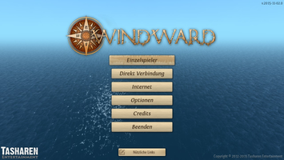
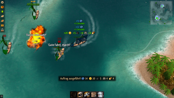
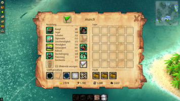
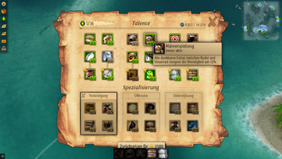

Windward
Dieser Artikel wurde für die folgenden Ubuntu-Versionen getestet:
Ubuntu 16.04 Xenial Xerus
Ubuntu 14.04 Trusty Tahr
Zum Verständnis dieses Artikels sind folgende Seiten hilfreich:
Windward  (Luv = die dem Wind zugekehrte Seite) ist ein Spiel, welches vom Klassiker Sid Meier's Pirates inspiriert wurde. Es werden Seeschlachten im fiktiven 17. Jahrhundert ausgefochten. Verschiedene Schiffstypen, zufällig generierte Karten und unterschiedlichste Ziele werden in Einzel- oder Mehrspielerpartien zur Verfügung gestellt. Durch den Gewinn von Gold und an Erfahrung können Fähigkeiten gezielt gefördert werden. Pirat, Händler, Eroberer oder Forscher – alles ist möglich.
(Luv = die dem Wind zugekehrte Seite) ist ein Spiel, welches vom Klassiker Sid Meier's Pirates inspiriert wurde. Es werden Seeschlachten im fiktiven 17. Jahrhundert ausgefochten. Verschiedene Schiffstypen, zufällig generierte Karten und unterschiedlichste Ziele werden in Einzel- oder Mehrspielerpartien zur Verfügung gestellt. Durch den Gewinn von Gold und an Erfahrung können Fähigkeiten gezielt gefördert werden. Pirat, Händler, Eroberer oder Forscher – alles ist möglich.
Innerhalb des Spiels können eine Reihe von Modifikationen vorgenommen werden.
|  |
| Menü |
|  |
| Spielszene |
Installation¶
Vorbereitung¶
Beim Einsatz eines 64-bit-Systems kann es notwendig sein, dass weitere Pakete installiert [1] werden müssen:
libgl1-mesa-glx-lts-utopic:i386
libc6:i386
libasound2:i386
libasound2-data:i386
libasound2-plugins:i386
 mit apturl
mit apturl
Paketliste zum Kopieren:
sudo apt-get install libgl1-mesa-glx-lts-utopic:i386 libc6:i386 libasound2:i386 libasound2-data:i386 libasound2-plugins:i386
sudo aptitude install libgl1-mesa-glx-lts-utopic:i386 libc6:i386 libasound2:i386 libasound2-data:i386 libasound2-plugins:i386
GOG.com¶
Windward kann über die Vertriebsplattform erworben werden. Im nächsten Schritt das Spiel in der Linux-Version aus der Bibliothek herunterladen. Anschließend die Datei gog_windward_VERSION.sh ausführbar machen [2] und abschließend im Terminal [5] die Installation starten:
./gog_windward_VERSION.sh
Nach der Wahl des Installationsverzeichnisses, z.B. ~/Spiele/Windward, wird das Spiel installiert und - sofern ausgewählt - ein Menüeintrag erstellt.
Humble Indie Bundle #18¶
Das Archiv WindwardLinux_HB.zip aus der der eigenen Bibliothek  herunterladen, entpacken [1] (z.B. nach ~/Spiele/Windward) und abschließend die Datei Windward.x86 ausführbar [2] machen. Über
herunterladen, entpacken [1] (z.B. nach ~/Spiele/Windward) und abschließend die Datei Windward.x86 ausführbar [2] machen. Über Windward.x86 kann das Spiel aus dem Ordner heraus gestartet [3] und auf Wunsch ein Menüeintrag [4] erstellt werden.
Steam¶
Der Spieltitel kann über die Internetvertriebsplattform oder den Client erworben und über letzteren installiert [6] bzw. gestartet werden.
Hauptmenü¶
Über das Hauptmenü erreicht man alle wichtigen Elemente:
| Hauptmenü | |
| Menüpunkt | Beschreibung |
| "Single Player" | Einzelspielerkampagne - hier kann ein lokaler Server gestartet werden. Über die eigene IP-Adresse können andere Spieler am Spiel teilnehmen. |
| "Direct Connect" | Hier können die Verbindungsdaten für ein Serverspiel hinterlegt werden. |
| "Internet" | Für ein Online-Spiel den Spielernamen hinterlegen und über "Servers" einen Server auswählen. |
| "Options" | Im Einstellungsmenü kann die Spielauflösung, die Spielsprache sowie die Audioausgabe eingestellt werden. |
|  |
| Schiff |
|  |
| Fertigkeiten |
Dedicated Server¶
Um einen eigenen Server zu betreiben, muss im Vorfeld folgendes Paket installiert [7] werden:
monodevelop (universe)
mit apturl
Paketliste zum Kopieren:
sudo apt-get install monodevelop
sudo aptitude install monodevelop
Anschließend das aktuelle Archiv von tasharen.com herunterladen und entpacken [1].
Hinweis:
In der Version von GOG.com ist der Server enthalten und im Installationsverzeichnis zu finden.
Der folgende Aufruf startet einen öffentlich sichtbaren Server [5]:
mono WWServer.exe -name "ubuntuusers" -tcp 5127 -public -world "World"
| Server | |
| Option | Beschreibung |
-name | Name des Servers - hier: ubuntuusers |
-tcp | TCP-Port welcher verwendet werden soll. In der Grundeinstellung ist dies 5127. |
-public | Diese Option setzen sofern der Server in der Liste öffentlich auftauchen soll. |
-world | Angabe der zu ladenden Welt welche z.B. unter ~/Windward/Worlds zu finden ist. |
-localPath | Angabe, welcher Pfad verwendet werden soll. |
Weiterführende Information findet man im Wiki .
Modifikationen¶
| Custom Sail |
Für das Spiel können eine Reihe von Modifikationen, wie z.B. eigene Symbole und neue Schiffe, vorgenommen werden.
Die Datei mod.zip kann von der Entwicklerseite heruntergeladen und als Basis für eigene Modifikationen verwendet werden.
Tastenkürzel¶
| Tastenkürzel | |
| Taste(n) | Beschreibung |
 | Das Schiff steuern. |
| I | Inventar aufrufen. |
| K | Talente & Spezialisierungen anzeigen lassen. |
| M | Karte ein- bzw. ausblenden. |
| T | Schnellreise |
| Tab ⇆ | Mitspieler auf dem Server anzeigen lassen. |
| Esc | Menü |
| Gefecht | |
| R | Schiffsreparatur durchführen. |
| V | Kugelhagel |
| C | Kettenschuss |
| Munitionswechsel | |
| B | Baumeister |
| F | Nebelbank |
Infobox¶
| Windward | |
| Genre: | Strategiespiel |
| Sprache: |    |
| Veröffentlichung: | 2013+ |
| Publisher: | Tasharen Entertainment |
| Systemvoraussetzungen: | 1.4GHz+ Prozessor - 2 GB RAM - mind. Intel HD Graphics 4200 - 250 MB Speicherplatz |
| Medien: | Download |
| Strichcode / EAN / GTIN: | - |
| Läuft mit: | nativ |
- Erstellt mit Inyoka
-
 2004 – 2017 ubuntuusers.de • Einige Rechte vorbehalten
2004 – 2017 ubuntuusers.de • Einige Rechte vorbehalten
Lizenz • Kontakt • Datenschutz • Impressum • Serverstatus -
Serverhousing gespendet von